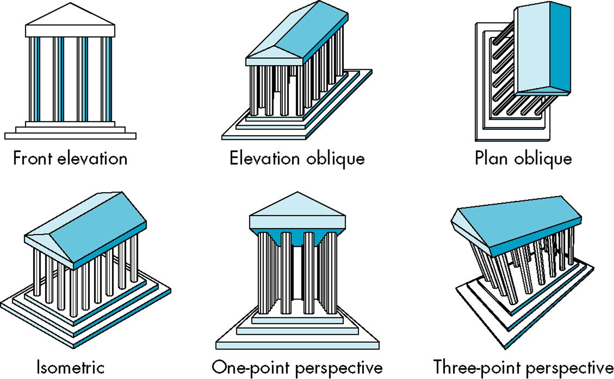

<!DOCTYPE HTML>
<html lang="zh-CN">

<head>
    <meta charset="UTF-8">
    <title>计算机图形学--成像</title>
    <meta name="description" content="认识图形系统和图形学计算模型概述">
    <meta name="author" content="Liyi">
    <meta name="viewport" content="width=device-width, initial-scale=1.0, maximum-scale=1.0, user-scalable=no">

    <meta name="apple-mobile-web-app-capable" content="yes">
    <meta name="apple-mobile-web-app-status-bar-style" content="black">

    <link rel="stylesheet" href="../../../dist/reset.css">
    <link rel="stylesheet" href="../../../dist/reveal.css">
    <link rel="stylesheet" href="../../../dist/theme/white.css" id="theme">

    <!-- Theme used for syntax highlighting of code -->
    <link rel="stylesheet" href="../../../plugin/highlight/monokai.css" id="highligh">

    <style type="text/css">
        .columnleft {
            float: left;
            width: 50%;
        }
    
        .columnright {
            float: right;
            width: 50%;
        }
    </style>
</head>

<body>
    <div class="reveal">
        <div class="slides">
            <section id="titlepage">
                <h1>计算机图形学</h1>
                <H2>第五章 成像</H2>
                <h3>经典成像</h3>
                <p id="date"></p>
                <script>
                    var now = new Date();
                    var year = now.getFullYear();
                    var month = now.getMonth();
                    var day = now.getDate();
                    document.getElementById("date").innerHTML = year + "年" + (1 + month) + "月" + day + "日";
                </script>
            </section>
            <section>
                <section id="classview">
                    <h2>经典成像</h2>
                    <h3>何为经典成像</h3>
                    <p style="text-align:left">成像有三要素</p>
                    <ul>
                        <li style="text-align:left">成像对象，一个或多个物体</li>
                        <li style="text-align:left">观察者，有一个投影平面</li>
                        <li style="text-align:left">投影线，将物体投射到投影平面上</li>
                    </ul>
                    <p style="text-align:left">经典成像即建立在这三者间关系基础上，观察者选择对象，选择合适的位置和角度</p>
                    <p style="text-align:left">每个物体对象都可视作是由一系列平面构成</p>
                </section>
                <section id="pgpro">
                    <h2>经典成像</h2>
                    <h3>平面几何投影</h3>
                    <p style="text-align:left">标准投影将物体投射到平面成像，所有的投影线要么平行，要么汇聚到一点，这样的投影线始终保持线性，但不保持角度</p>
                    <p style="text-align:left">对某些特殊的应用需要非线性投影，如地图</p>
                </section>
                <section id="cprotype">
                    <h2>经典成像</h2>
                    <h3>经典投影示例</h3>
                    
                </section>
                <section id="projselv">
                    <h2>经典成像</h2>
                    <h3>平行投影(Parallel Proj.)vs透视投影(Perspective Proj.)</h3>
                    <div class="columnleft">
                        
                    </div>
                    <div class="columnright">
                        
                    </div>
                </section>
                <section id="prosel">
                    <h2>经典成像</h2>
                    <h3>投影方式选择</h3>
                    <p style="text-align:left">选择平行投影还是透视投影，在经典成像中两种投影方式的实现是不同的，但在计算机图形学的计算中两者是同一套管线，处理方式也是统一的。从数学上来看，透视投影的极限情况就是平行投影</p>
                </section>
                <section id="cprojclass">
                    <h2>经典成像</h2>
                    <h3>经典投影分类</h3>
                    <br>
                    <figurecaption style="font-size:large"><a href="https://en.wikipedia.org/wiki/3D_projection">https://en.wikipedia.org/wiki/3D_projection</a></figurecaption>
                </section>
            </section>
            <section>
                <section id="parproj">
                    <h2>经典成像</h2>
                    <h3>正投影(Orthographic Proj.)</h3>
                    <p style="text-align:left">正投影中，投影线与投影平面垂直</p>
                    
                </section>
                <section id="multiproj">
                    <h2>经典成像</h2>
                    <h3>多视图正投影(Mutliview Orthographic Proj.)</h3>
                    <p style="text-align:left;font-size:xx-large">主要投影平面和物体的面平行，一般采用第一人称视图，即正视图、顶视图和左视图</p>
                    
                    <p style="text-align:left;font-size:xx-large">一般用于CAD和建筑制图，用三个视图加上等轴测视图构成完整视图</p>
                </section>
                <section id="orthopc">
                    <h2>经典成像</h2>
                    <h3>正投影优缺点</h3>
                    <ul>
                        <li style="text-align:left">优点：能够保持物体原有的距离和角度，维持原有的形状，可用于测量，如规划设计、制作手册等</li>
                        <li style="text-align:left">缺点：因为视角位置上存在遮挡，无法观察到物体的完整情况，通常需要加上轴测图</li>
                    </ul>
                </section>
            </section>
            <section>
                <section id="axnoproj">
                    <h2>经典成像</h2>
                    <h3>轴测投影(Axonometric Proj.)</h3>
                    <p style="text-align:left;font-size:xx-large">投影平面相对物体发生运动</p>
                    <div class="columnleft">
                        
                        <p style="text-align:left;font-size:xx-large">根据投影立方体一角的三个角度几个相同，将轴测投影分为等轴测(isometric, 三个角相同)，二轴测(dimetric, 二个角相同)，三轴测(trimetric 三个角都不同)</p>
                    </div>
                    <div class="columnright">
                        
                    </div>
                </section>
                <section id="axoviews">
                    <h2>经典成像</h2>
                    <h3>轴测投影类型</h3>
                    
                </section>
                <section id="axonopc">
                    <h2>经典成像</h2>
                    <h3>轴测投影优缺点</h3>
                    <ul>
                        <li style="text-align:left">线段有缩放，但无法找到缩放系数</li>
                        <li style="text-align:left">能够保持线性关系，但无法维持角度关系，如将一个圆投影到不平行的投影平面，形成的结果为椭圆</li>
                        <li style="text-align:left">可同时看到类盒子物体的三个表面</li>
                        <li style="text-align:left">可能产生光学错觉，如平行线看起来像发散的线</li>
                        <li style="text-align:left">视觉上不具有真实感，远处的物体与近处的物体有同样的缩放系数</li>
                    </ul>
                    <p style="text-align:left">轴测投影主要用于CAD领域</p>
                </section>
            </section>
            <section>
                <section id="obliquepj">
                    <h2>经典成像</h2>
                    <h3>斜投影(Oblique Proj.)</h3>
                    <p style="text-align:left">斜投影中，投影线和投影平面之间可以成任意角度</p>
                    
                </section>
                <section id="obpc">
                    <h2>经典成像</h2>
                    <h3>斜投影优缺点</h3>
                    <ul>
                        <li style="text-align:left">可以选择任意角度，强调物体中某个特定的面，尤其用于建筑设计中</li>
                        <li style="text-align:left">与投影平面平行的平面角度能够维持，使得在斜投影中可以看到周围的面</li>
                        <li style="text-align:left">在现实世界中，无法用简单的相机获得斜投影视图</li>
                    </ul>
                </section>
            </section>
            <section>
                <section id="persproj">
                    <h2>经典成像</h2>
                    <h3>透视投影</h3>
                    <p style="text-align:left">透视投影中投影线会聚到投影中心</p>
                    
                </section>
                <section id="vpts">
                    <h2>经典成像</h2>
                    <h3>灭点</h3>
                    <p style="text-align:left">物体上的平行线(与投影平面不平行的线)会聚到投影方向上的一点(灭点)，根据灭点可以手绘简单透视投影的视图效果</p>
                </section>
                <section id="trptpers">
                    <h2>经典成像</h2>
                    <h3>三点透视</h3>
                    <p style="text-align:left">三点透视中，没有一个主要平面与投影面平行，立方体投影有三个灭点</p>
                    
                </section>
                <section id="dptpers">
                    <h2>经典成像</h2>
                    <h3>二点透视</h3>
                    <p style="text-align:left">两点透视中，一个主要平面与投影面平行，立方体投影有两个灭点</p>
                    
                </section>
                <section id="optpers">
                    <h2>经典成像</h2>
                    <h3>一点透视</h3>
                    <p style="text-align:left">一点透视中，两个主要平面与投影面平行，立方体投影有一个灭点</p>
                    
                </section>
                <section id="perspc">
                    <h2>经典成像</h2>
                    <h3>透视投影优缺点</h3>
                    <ul>
                        <li style="text-align:left">距离观察者较远的物体会比距离较近的物体在投影平面上的成像更小，看起来会更真实</li>
                        <li style="text-align:left">沿着同一条线两段相同距离的线段在投影成像上距离不同</li>
                        <li style="text-align:left">只有与投影平面平行的面上的角度能够得到维持</li>
                        <li style="text-align:left">透视投影较难用手绘实现</li>
                    </ul>
                </section>
            </section>
        </div>
    </div>

    <script src="../../../dist/reveal.js"></script>
    <script src="../../../plugin/zoom/zoom.js"></script>
    <script src="../../../plugin/notes/notes.js"></script>
    <script src="../../../plugin/search/search.js"></script>
    <script src="../../../plugin/markdown/markdown.js"></script>
    <script src="../../../plugin/highlight/highlight.js"></script>
    <script>
        Reveal.initialize({
            // display controls in the bottom right corner
            controls: true,

            // display a presentation progress bar
            progress: true,

            // set default timing of 2 minutes per slides
            defaultTiming: 120,

            // Display the page number of the current slides
            slideNumber: true,

            // Push each slide change to the browser history
            history: false,

            // Enable keyboard shortcuts for navigation
            keyboard: true,

            // Enable the slide overview mode
            overview: true,

            // Vertical centering of slides
            center: true,

            // Enable touch navigation on devices with touch input
            touch: true,

            // Loop the presentation
            loop: false,

            // Change teh presentation direction to be RTL
            rtl: false,

            // Randomizes the order of slides each time the presentation loads
            shuffle: false,

            // Turns fragments on and off globally
            fragment: true,

            // Flags if the presentation is running in an embedded mode,
            // i.e. contained within a limited portion of the screen
            embedded: false,

            // Flags if we should show a help overlay when the questionmark key is pressed
            help: true,

            // Flags if speaker notes should be visible to all viewers
            showNotes: false,

            // Global override for autoplaying embedded media( video/audio/iframe)
            // - null: media will only autoplay if data-autopay is present
            // - true: all media will autoplay, regradless of individual setting
            // - false: no media will autoplay, regardless of individual setting
            autoPlayMedia: null,

            // Number of milliseconds between automatically proceeding to the next slide, 
            //disabled when set to 0, this value can be overwritten by
            // using a data-autoslide attribute on your slides
            autoSlide: 0,

            // Stop auto-sliding after user input
            autoSlideStoppable: true,

            // Use this method for navigation when auto-sliding
            autoSlideMethod: Reveal.navigateNext,

            // Enable slide navigation via mouse wheel
            mouseWheel: false,

            // Hides the address bar on mobile devices
            hideAddressBar: true,

            // Opens links in an iframe preview overlay
            previewLinks: false,

            // Transition style
            transition: 'slide', // none/fade/slide/convex/concave/zoom

            // Transition speed
            transitionSpeed: 'default', // default/fast/slow

            // Transition style for full page slide backgrounds
            backgroundTransition: 'fade', // none/fade/slide/convex/concave/zoom

            // Number of slides away from the current that are visible
            viewDistance: 3,

            // Parallax background image
            parallaxBackgroundImage: '', // e.g. "'https://s3.amazonaws.com/hakin-static/reveal-../js/reveal-parallax-1.jpg'"

            // Parallax background size
            parallaxBackgroundSize: '', // CSS syntax, e.g. "2100px 900px"

            // Number of pixels to move the parallax background per slide
            // - calculated automatically unless specified
            // - set to 0 to disable movement along an axis
            parallaxBackgroundHorizontal: null,
            parallaxBackgroundVertical: null,

            // The display mode that will be used to show slides
            display: 'block',

            // print to pdf while no slide grows to more than one printed page
            pdfMaxPagesPerSlide: 1,

            // presentation
            width: 900,
            height: 900,

            margin: 0.1,

            minScale: 0.2,
            maxScale: 1.5,
        })
    </script>
</body>

</html>